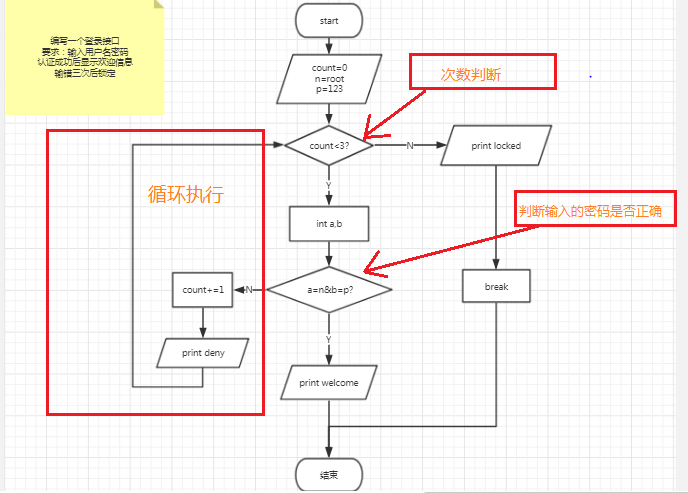
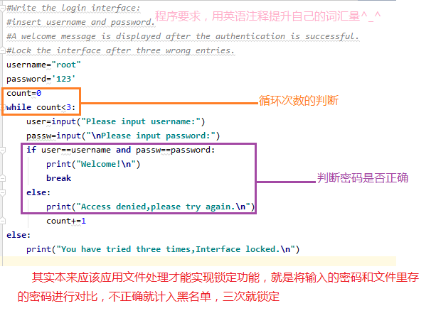
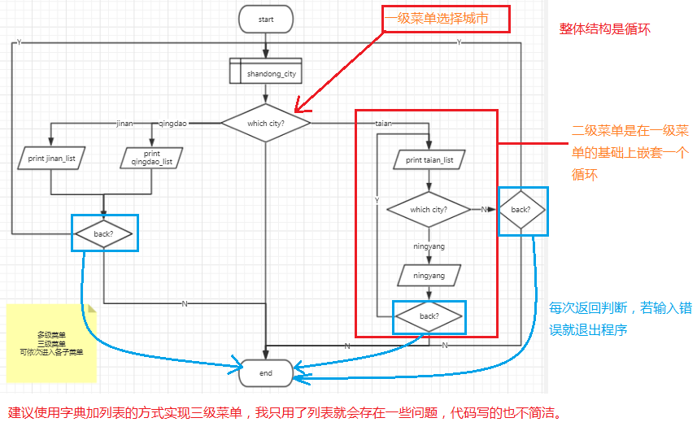
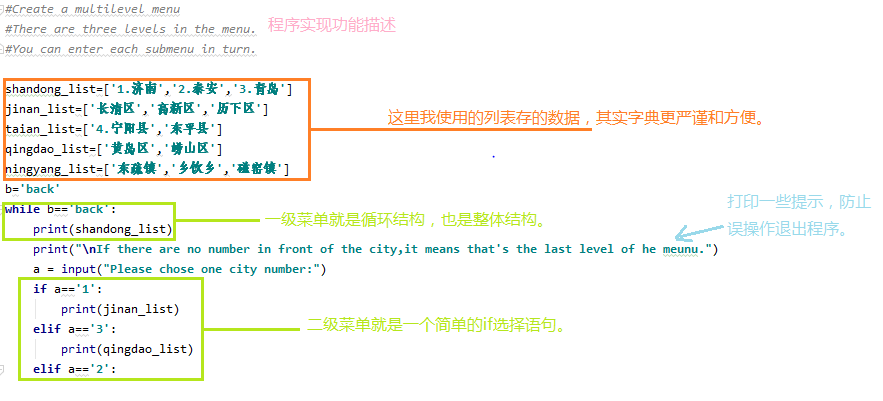
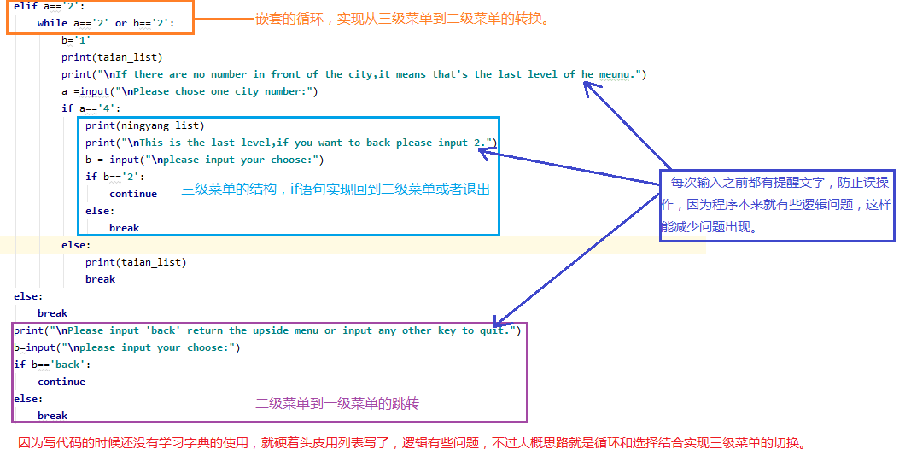

一、【登录密码的判断】
实现这个功能主要用到while循环和if-else判断，实现最多三次输入不正确就退出程序，实现锁定功能就要用到文件处理命令。
①、程序流程图

②、程序代码图

③、程序代码:
1 #Write the login interface:
2 #insert username and password.
3 #A welcome message is displayed after the authentication is successful.
4 #Lock the interface after three wrong entries.
5 username="root"
6 password='123'
7 count=0
8 while count<3:
9 user=input("Please input username:")
10 passw=input("\nPlease input password:")
11 if user==username and passw==password:
12 print("Welcome!\n")
13 break
14 else:
15 print("Access denied,please try again.\n")
16 count+=1
17 else:
18 print("You have tried three times,Interface locked.\n")④、个人总结：
登录入口的实现就是将输入的用户名密码和已知的正确用户名密码进行匹配，如果相同，就显示登录成功，失败就将错误的登录记入到黑名单，三次后入口被锁定，这里用到的是文件操作，我们可以在三次以后不再调用密码文件或者更改黑名单的文件权限，让文件不能写入，实现数据的锁定，我在写的时候没有想到如何调出密码进行匹配，就简单的写了个循环是三次错误跳出程序，没有实现锁定功能的实现。
二、【三级菜单设计】
这个功能实现也是运用了循环语句和选择语句，完善功能或者优化代码的话就使用字典或者逻辑的修改，我使用的列表先存储数据，但这样逻辑上就有些不清晰，大体功能还是实现了。
①、流程图

②、程序代码图


③、程序代码：
1 #Create a multilevel menu
2 #There are three levels in the menu.
3 #You can enter each submenu in turn.
4
5 shandong_list=['1.济南','2.泰安','3.青岛']
6 jinan_list=['长清区','高新区','历下区']
7 taian_list=['4.宁阳县','东平县']
8 qingdao_list=['黄岛区','崂山区']
9 ningyang_list=['东疏镇','乡饮乡','磁窑镇']
10 b='back'
11 while b=='back':
12 print(shandong_list)
13 print("\nIf there are no number in front of the city,it means that's the last level of he meunu.")
14 a = input("Please chose one city number:")
15 if a=='1':
16 print(jinan_list)
17 elif a=='3':
18 print(qingdao_list)
19 elif a=='2':
20 while a=='2' or b=='2':
21 b='1'
22 print(taian_list)
23 print("\nIf there are no number in front of the city,it means that's the last level of he meunu.")
24 a =input("\nPlease chose one city number:")
25 if a=='4':
26 print(ningyang_list)
27 print("\nThis is the last level,if you want to back please input 2.")
28 b = input("\nplease input your choose:")
29 if b=='2':
30 continue
31 else:
32 break
33 else:
34 print(taian_list)
35 break
36 else:
37 break
38 print("\nPlease input 'back' return the upside menu or input any other key to quit.")
39 b=input("\nplease input your choose:")
40 if b=='back':
41 continue
42 else:
43 break④、个人总结
我在实现这个三级菜单的时候也修改了好多次逻辑，因为没有提前理清楚思路，导致代码没有出现问题但是逻辑频繁出问题，所以在编写一个程序之前一定要设计好流程，还有就是对于数据的存储，因为还没有学调用数据库，字典也没有学，就先用列表试试看，虽然勉强实现了功能，肯定不如字典来得更严谨一些，虽然每次输入之前都有提醒，一旦输错就会推出程序，这也是逻辑实现的一个漏洞，继续努力吧。
上面两个程序都是运用简单的while和if实现了一些功能，如果能运用函数的调用或其他语法会让程序更完善。